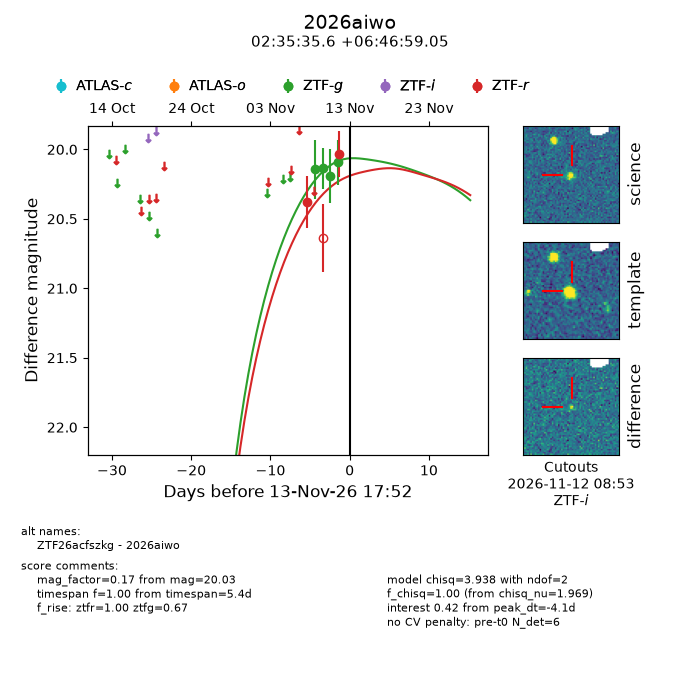
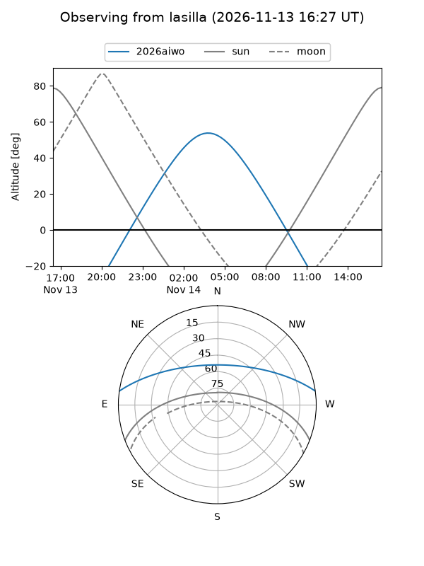
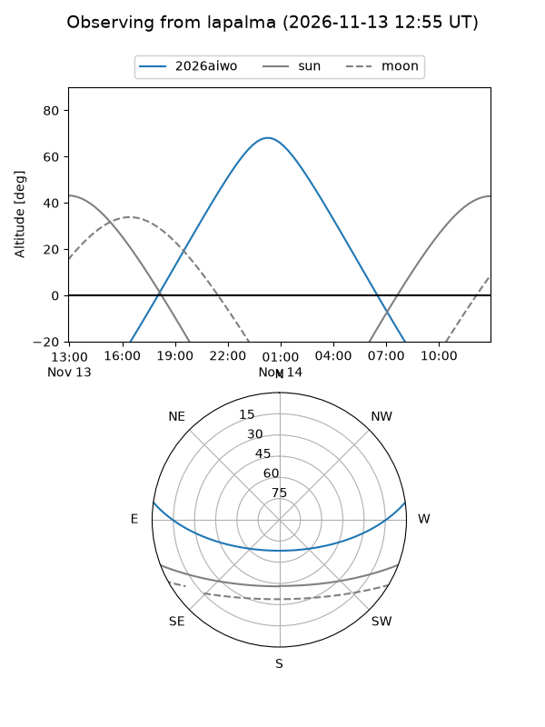
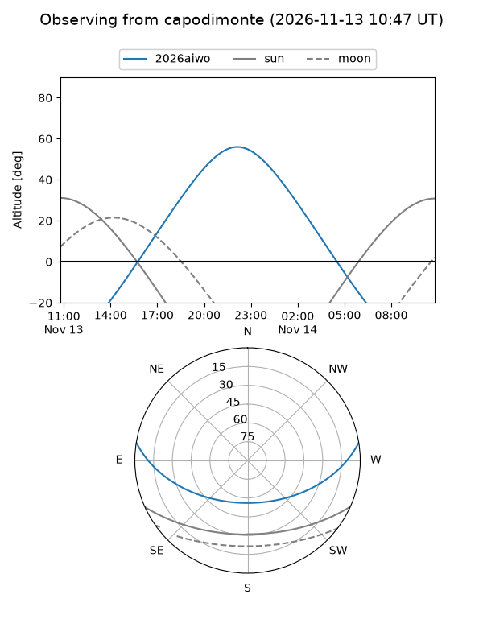
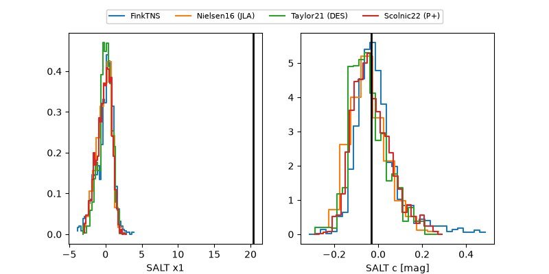

2026aiwo
Target 2026aiwo at 2026-11-13 17:58
Aliases and brokers:
FINK-ZTF: ztf.fink-portal.org/ZTF26acfszkg
Lasair-ZTF: lasair-ztf.lsst.ac.uk/objects/ZTF26acfszkg
ALeRCE-ZTF: alerce.online/object/ZTF26acfszkg
YSE-PZ: ziggy.ucolick.org/yse/transient_detail/2026aiwo
TNS name: wis-tns.org/object/2026aiwo
Direct TNS query: direct search
alt names
ZTF26acfszkg (ztf,fink_ztf)
2026aiwo (tns,yse)
Coordinates:
equatorial (ra, dec) = 38.8981,+6.78307
equatorial (HMS+DMS) = 02:35:35.56,+06:46:59.05
galactic (l, b) = (163.3450,-47.74835)
Flags:
peak dt: -4.1
Photometry:
last ztfg=20.09, ztfr=20.03
4 ztfg, 2 ztfr detections
Lightcurve

Visibility



Additional plots
